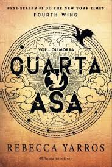
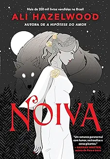

A Hipótese do Amor
A hipótese do amor é um romance de Ali Hazelwood que conta a história de Olive
Smith,
uma estudante de doutoramento em Biologia que não acredita em namoros duradouros.
Para convencer a melhor amiga de que está feliz e a namorar, Olive beija Adam
Carlsen,
um professor de outro departamento da Universidade de Stanford. Adam aceita manter a
farsa,
mas as teorias de Olive sobre o amor são postas à prova quando LER MAIS...

Quarta Asa
Violet Sorrengail, uma jovem de vinte anos, estava destinada a entrar na Divisão dos Escribas,
levando uma vida relativamente tranquila entre os livros e as aulas de História. No entanto, a general
comandante das forças de Navarre – também conhecida como sua mãe –, durona como as garras de um dragão,
ordena que Violet se junte às centenas de candidatos que buscam se tornar a elite de seu país: cavaleiros
de dragões. LER MAIS...
Não é Amor
A vida de Rue Siebert não é perfeita, mas ela tem alguns poucos amigos leais e uma carreira de
sucesso como engenheira de biotecnologia na Kline, uma das mais promissoras startups no campo da
ciência dos alimentos.
Ela lutou muito para construir esse mundinho seguro e agradável, que ameaça desmoronar
quando um homem terrivelmente atraente lidera uma aquisição hostil da Kline. LER MAIS...
É Assim que Começa
Lily Bloom continua administrando uma floricultura. Seu ex-marido abusivo, Ryle Kincaid, ainda é um
cirurgião. Mas agora os dois estão oficialmente divorciados e dividem a guarda da filha, Emerson.
Quando Lily esbarra em Atlas ― com quem não fala há quase dois anos ―, parece que finalmente chegou o
momento de retomar o relacionamento da adolescência, já que ele também está solteiro e parece retribuir os
LER MAIS...

Noiva
Misery Lark, filha do vampiro mais poderoso do sudoeste, nunca foi bem-vista pelos seres de sua espécie.
Ela passa seus dias anonimamente em meio aos humanos, isolada, até que é chamada para firmar um acordo
de paz entre vampiros e licanos, seus inimigos mortais. Para isso, será obrigada a se casar com Lowe Moreland.
Licanos são lobisomens cruéis e imprevisíveis, e o alfa do bando, Lowe, não é exceção.
LER MAIS...